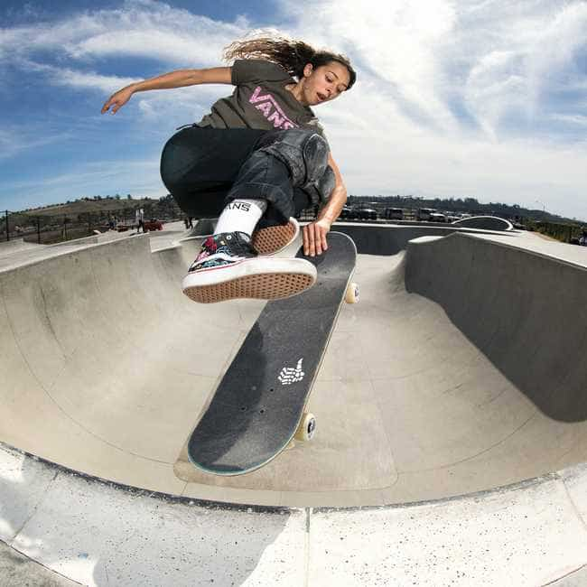
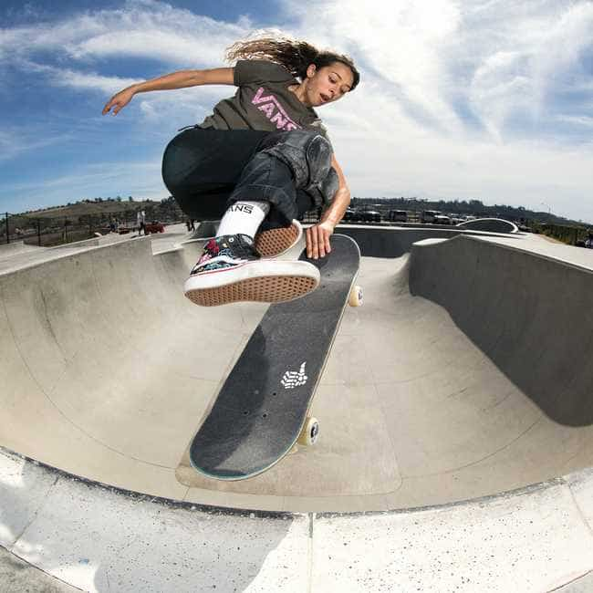
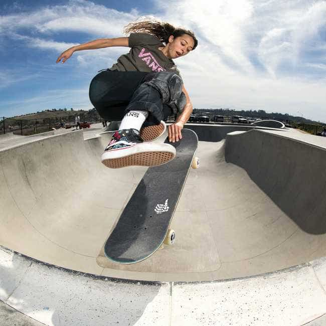

El Skateboarding, es un deporte que consiste en deslizarse sobre un monopatín y a la vez poder realizar diversos trucos, gran parte de ellos elevando la tabla del suelo, haciendo piruetas con ella en el aire. Se practica con un monopatín o patineta, tabla de madera plana y doblada por los extremos que tiene dos ejes y cuatro ruedas, con dos rodamientos en cada una de sus cuatro ruedas, preferentemente en una superficie plana, en cualquier lugar donde se pueda rodar, ya sea en la calle o en los skateparks (parques de patinaje). Para abreviar se le designa simplemente skate, que es también el término utilizado para nombrar el monopatín o patineta, tabla sobre la que se practica el monopatinaje. Está relacionado con el surf, la cultura callejera, con el arte urbano, pero muchos monopatinadores apenas patinan en calles o plazas. Son los "rampers", quienes solo patinan en rampas. De hecho, en bastantes competiciones existen dos categorías más extendidas: street y vert (rampa); porque un individuo puede deslizarse por las pendientes de un skatepark

Nyjah Imani Huston (nacido el 30 de noviembre de 1994 en Davis, California) es un skateboarder profesional estadounidense que en agosto del 2012, fue el campeón general en el Street League Skateboarding. Es un skater que patina en la posición goofy es decir con el pie derecho delante. En 2012 la revista Transworld Skateboarding en su entrega de premios le dio el título al rendimiento de Huston , «Nyjah Huston limpia los premios anuales de Transworld Skate».
Shane O'Neill (born 3 January 1990) is an Australian professional skateboarder from Melbourne, Victoria. Shane is a member of the SLS "9 Club" meaning he has landed a trick in the Street League competition that judges scored an average of 9 or better. Shane's trick was a switchstance Switch 360 double kickflip. In 2016 Shane won a silver medal at the X Games in Oslo. His normal stance is Goofy. In 2021, O'Neill qualified for the 2020 Tokyo Summer Olympics in the street skateboarding.
Chris Cole (born March 10, 1982) is an American professional skateboarder. As of September 2020, his sponsors are Fallen Footwear, Monster Energy, Bones Bearings, Cult Crew, Thunder Trucks, Spitfire Wheels, Stance, Kershaw Knives, Grizzly Griptape, GoPro, Indian Motorcycles, cbdMD, Remind Insoles, and most recently Zero Skateboards. Cole gained attention following the completion of a number of difficult tricks: 360 flip, Switch Frontside flip and Backside 360 ollie down the staircase.